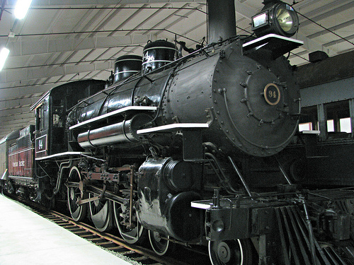

Last updated: 9 September, 2025
| Builder: | ALCO (Brooks) |
| Build #: | 46419 |
| Date: | 1909 |
| Engine #: | 94 |
| Railroad: | Western Pacific |
| Website: | www.wrm.org |
| Email: | Info@wrm.org |
| Location 1: | Western Railway Museum, 5848 State Highway 12, Suisun, CA 94585 |
| GPS: | 38.204329, -121.873745 Parking |
| Phone: | 707-374-2978 |
| Status: | Stored |
| Notes: | |
Subject to change: 1 | |
| Admission: | Adults - $18 Seniors (over 65) – $17 Children (2-14) – $15 Free Admission for Museum Members |
| Hours: | Year Round Saturdays & Sundays 1030 to 1700 Summer Hours (June 19 - September 1): Thursday (Interurban Train Rides) 0930 to 1500 Friday (Docent and/or Walking Tours ONLY) 0930 to 1430 Saturday, & Sunday (Interurban Train Rides) 0930 to 1600 Hours may vary at any time due to weather and/or the availability of our volunteers. Closed Thanksgiving Day, Christmas Eve, Christmas Day, New Years Eve, New Years Day |
| Class: | |
| Gauge: | 4'-8½" |
| F.M.Whyte: | 4-6-0 |
| Drivers: | |
| Gear Ratio: | |
| Tractive Effort: | |
| Weight: | 293,500 |
| Weight on Drivers: | |
| Length: | 69’ |
| Boiler: | |
| Cylinders: | |
| Top Speed: | |
| Horsepower: | |
| Fuel: | oil |
| Fuel Type: | |
| Water: | |
| Steam psi: |